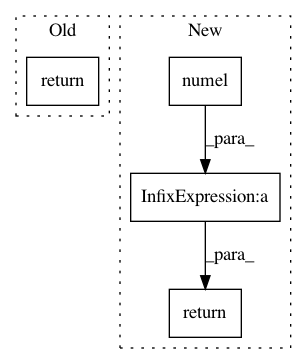

1972461c3c06d11872cdf62941a616ee82c858a8,gpytorch/lazy/constant_mul_lazy_variable.py,ConstantMulLazyVariable,_constant_as,#ConstantMulLazyVariable#Any#,46
Before Change
if constant.ndimension() > other.ndimension():
constant = constant.squeeze(-1)
return constant.expand_as(other)
def _size(self):
return self.lazy_var.size()
After Change
return res
def _constant_as(self, other):
size = [self.constant.numel()] + [1] * (other.ndimension() - 1)
constant = self.constant.view(*size)
if constant.ndimension() > other.ndimension():
constant = constant.squeeze(-1)
return constant
def _size(self):
return self.lazy_var.size()
In pattern: SUPERPATTERN
Frequency: 3
Non-data size: 4
Instances
Project Name: cornellius-gp/gpytorch
Commit Name: 1972461c3c06d11872cdf62941a616ee82c858a8
Time: 2018-08-17
Author: gpleiss@gmail.com
File Name: gpytorch/lazy/constant_mul_lazy_variable.py
Class Name: ConstantMulLazyVariable
Method Name: _constant_as
Project Name: interactiveaudiolab/nussl
Commit Name: fa6f47e7aee228226421c52e61cce4e1ab4cc099
Time: 2020-03-15
Author: prem@u.northwestern.edu
File Name: nussl/ml/train/loss.py
Class Name: PermutationInvariantLoss
Method Name: forward
Project Name: cornellius-gp/gpytorch
Commit Name: d030d7b419972323583c3b7378e4de9183ba9192
Time: 2018-10-01
Author: gpleiss@gmail.com
File Name: gpytorch/lazy/constant_mul_lazy_tensor.py
Class Name: ConstantMulLazyTensor
Method Name: __getitem__